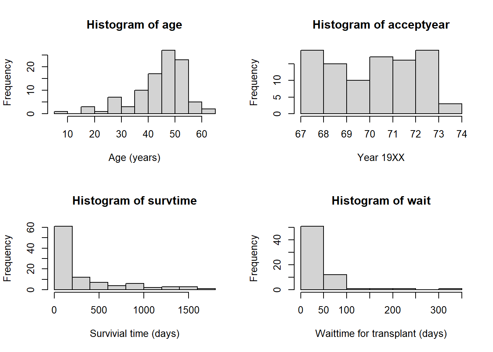

library(survival)
#install.packages("survminer")
library(survminer)Loading required package: ggplot2Loading required package: ggpubr
Attaching package: 'survminer'The following object is masked from 'package:survival':
myelomalibrary(survival)
#install.packages("survminer")
library(survminer)Loading required package: ggplot2Loading required package: ggpubr
Attaching package: 'survminer'The following object is masked from 'package:survival':
myelomaThe Cox Proportional Hazard Model (PHM) is best suited for this data due to the fact that this model is used to examine a time-to-event outcome, t, as a function of more than one predictor variable xi . What makes Cox PHM unique compared to other models is the fact that it adjusts for censoring. Censoring occurs when the exact time of exposure before an event is unknown. The three main reasons for censoring are: (1) a person does not experience the event before the end of the experiment; (2) a person does not check-in during study; or (3) a person withdraws from the experiment for reasons other than the event of interest (e.g. death in most survival analysis) [1]. A strength of the Cox PHM allows the inclusion of patients who have not had the event. Information is still provided by the patient up to the time of censoring, which informs the overall time to events in the population.
The Cox regression model is based on the hazard function. Mathematically written as :
\[ h_i(t)=h_0(t) \times e\beta_0 + \beta_1X_{i1} + \beta_{2}X_{i2} + \dots + \beta n X_{in} \]
Where i= 1,2,‚Ķ, N indexes patients, t represents time, \(h_i(t)\) is the hazard function for person i at time period t, h_0 is the baseline hazard, X_{i1} ,X_{i2} , ‚Ķ X_{in} is a set of independent variables (predictor variables) for person i and \(ùõΩ_0\) are the regression coefficients for the independent variables [2].
Linear regression model on the other hand is not a good fit for this type of data for the following reasons. Survival analysis has two unique characteristics that linear regression doesn’t handle well, censoring and time to event outcomes. Censored data is assumed to be all completed under linear regression and that is not the case in survival analysis. Secondly, linear regression assumes a constant relationship between predictors and response variables. Survival data can exhibit hazard rates, which linear regression can not handle too well.
The other survival analysis model that is often used is the Kaplan-Meier (KM) Survival Analysis. K-M survival analysis is best used to measure the fraction of subjects living for a certain amount of time after treatment [3]. Censored observations don’t hinder the K-M analysis similarly to Cox PMH. The one thing that Cox PMH can do that K-M analysis cannot is performing multivariate analysis by assessing the simultaneous effects of multiple predictor variables on survival outcomes (such as what we are doing with our data), because of this K-M analysis is considered univariate analysis [4].
Data for our cox regression analysis comes from the Stanford University Heart Transplant Study. The study was conducted to determine if an experimental heart transplant program may increase the lifespan of the recipient. Each patient in the program is considered an official heart transplant candidate, meaning they have an illness that will most likely need a heart transplant in order to prolong their lives. Patients heart transplant occurs between a few weeks to several months which all depends on donor heart availability. Although few candidates during the waiting period show improvement and get deselected as heart transplant candidates, they are kept in the data as continuing candidates [5]. These continuing candidates contribute to the censoring data.
The variables included in the Cox model as the x variable (or predictors) are accepted year, age, prior and transplant. Accepted year was the year the patient was included as an official candidate in the experiment and in the data these values are stored under “acceptyear”. Their age when accepted in the study is labeled “age”. Third predictor is whether or not the patient had prior surgeries with the header “prior”. Finally, transplant status, if the patient received the heart transplant or not stored under the column name “transplant”. The criteria (y variable) are survival status weather they survived until the end of the experiment, and the number of days a patient lived for after receiving the transplant is labeled “survtime”.
Variables within the data set such as, the columns: survived, prior, and transplant needed to be converted from characteristic columns to numeric columns. A model was generated without the variable wait time due to the fact that only patients who received the transplant had a wait time. In order to include more patients (n=103) into the model, wait time was not chosen as a predictor variable.
The data was categorized into under 40, 40-50, and 50 and over, a histogram was generated \(\textbf Image 2\) shows from one age category to another a patient is twice as likely to die. This does not include accounting for if you get a transplant or not. Being in need of a transplant, in addition to going from one age group to another the risk of dying is doubled. Two Cox proportional hazard models (PHM) are used in order to stratify the data on the transplant variable. One Cox PHM for those who receive the transplant and one for those who do not. When the data is stratified by transplant status, non-proportionality is better visualized as seen in \(\textbf Image 1\), those that do not have the transplant die off at a much steeper rate than those that do have transplant. Image 1 Survival rate with Transplant and without Transplant Image 2 Risk of dying due to age group.
\(\textbf Image 1\) Survival rate with Transplant and without Transplant
heart_transplant <- read.csv("./heart_transplant.csv")
#generate numeric columns for survived, prior, and transplant from existing charachter columns
heart_transplant$survived2 <- as.numeric(ifelse(heart_transplant$survived=="dead",1,0))
heart_transplant$prior2 <- as.numeric(ifelse(heart_transplant$prior=="yes",1,0))
heart_transplant$transplant2 <- as.numeric(ifelse(heart_transplant$transplant=="treatment",1,0))
all_strTrtmnt.mod <- coxph(Surv(survtime, survived2)~ age + prior2 + strata(transplant2), data=heart_transplant)
summary(all_strTrtmnt.mod)Call:
coxph(formula = Surv(survtime, survived2) ~ age + prior2 + strata(transplant2),
data = heart_transplant)
n= 99, number of events= 71
coef exp(coef) se(coef) z Pr(>|z|)
age 0.04662 1.04773 0.01434 3.250 0.00115 **
prior2 -0.78988 0.45390 0.44480 -1.776 0.07576 .
---
Signif. codes: 0 '***' 0.001 '**' 0.01 '*' 0.05 '.' 0.1 ' ' 1
exp(coef) exp(-coef) lower .95 upper .95
age 1.0477 0.9544 1.0187 1.078
prior2 0.4539 2.2031 0.1898 1.085
Concordance= 0.642 (se = 0.038 )
Likelihood ratio test= 15.95 on 2 df, p=3e-04
Wald test = 13.96 on 2 df, p=9e-04
Score (logrank) test = 14.36 on 2 df, p=8e-04ggsurvplot(survfit(all_strTrtmnt.mod), data=heart_transplant, ggtheme = theme_minimal(), conf.int=TRUE, risk.table=TRUE, tables.height = 0.3, tables.theme = theme_minimal())
heart_transplant$age2 <- as.numeric(ifelse(heart_transplant$age<41,0,ifelse(heart_transplant$age<51,1,2)))
hist(heart_transplant$age2, xlab="Age (<40, 40-49, 50+)")
#generate model with chategorized age
all_agechat.mod <- coxph(Surv(survtime, survived2)~ age2 + prior2 + strata(transplant2), data=heart_transplant)
summary(all_agechat.mod)Call:
coxph(formula = Surv(survtime, survived2) ~ age2 + prior2 + strata(transplant2),
data = heart_transplant)
n= 99, number of events= 71
coef exp(coef) se(coef) z Pr(>|z|)
age2 0.7337 2.0828 0.1808 4.059 4.93e-05 ***
prior2 -0.7177 0.4879 0.4451 -1.613 0.107
---
Signif. codes: 0 '***' 0.001 '**' 0.01 '*' 0.05 '.' 0.1 ' ' 1
exp(coef) exp(-coef) lower .95 upper .95
age2 2.0828 0.4801 1.4614 2.968
prior2 0.4879 2.0497 0.2039 1.167
Concordance= 0.634 (se = 0.041 )
Likelihood ratio test= 20.9 on 2 df, p=3e-05
Wald test = 20.01 on 2 df, p=5e-05
Score (logrank) test = 21.14 on 2 df, p=3e-05[1] A. N. Kulaylat and L. Tran, “Chapter 26- Regression Analysis ,” in Translational surgery, Amsterdam : ELSEVIER ACADEMIC PRESS, 2023, pp. 157–163
[2] S. Abd ElHafeez et al., “Methods to analyze time-to-event data: The Cox Regression Analysis,” Oxidative medicine and cellular longevity, https://www.ncbi.nlm.nih.gov/pmc/articles/PMC8651375/ (accessed Oct. 20, 2023).
[3] M. K. Goel, P. Khanna, and J. Kishore, “Understanding survival analysis: Kaplan-Meier estimate,” International journal of Ayurveda research, https://www.ncbi.nlm.nih.gov/pmc/articles/PMC3059453/#:~:text=may%20become%20small.-, The%20Kaplan%2DMeier%20estimate%20is%20the%20simplest%20way%20of%20computing ,associated%20with%20subjects%20or%20situations.&text=For%20each%20time%20interval% 2C%20survival,number%20of%20patients%20at%20risk. (accessed Oct. 20, 2023).
[4] W. N. Dudley, R. Wickham, and N. Coombs, “An introduction to survival statistics: Kaplan-Meier analysis,” Journal of the advanced practitioner in oncology, https://www.ncbi.nlm.nih.gov/pmc/articles/PMC5045282/ (accessed Oct. 20, 2023).
[5] Turnbull B, Brown B, and Hu M (1974). “Survivorship of heart transplant data.” Journal of the American Statistical Association, vol. 69, pp. 74-80.